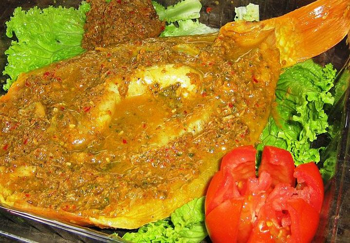

Isi form pemesanan dengan klik tombol pesan di bawah
Kuliner Khas Danau Toba: Naniura
Diposting pada 14.00 WIB, 06 Oktober 2023

Tidak hanya menyuguhkan pemandangan yang indah saja, Danau Toba juga menawarkan kuliner khas yang unik dan menggugah selera. Salah satunya adalah Naniura. Hidangan ini kerap disebut sebagai sashimi khas Batak yang kaya akan rempah. Naniura merupakan ikan yang dimasak tanpa menggunakan api, namun tetap matang dan enak.
Naniura menggunakan ikan mas yang telah dibersihkan dan direndam dengan air asam jungga atau jeruk purut untuk mematangkannya. Setelah matang, ikan disiram dengan campuran bumbu rempah, agar rasanya semakin meresap.
Ciri khas dari Naniura adalah perpaduan rempah andaliman dan kecombrang yang menggugah selera makan. Saat menyantapnya, kita bisa merasakan rasa kenyal, lembut, dan lezat dari daging ikannya.